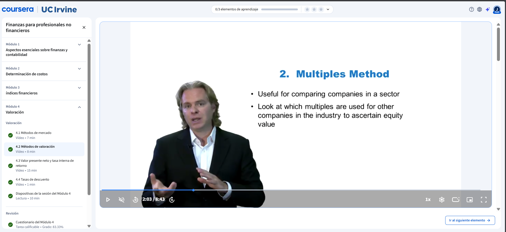
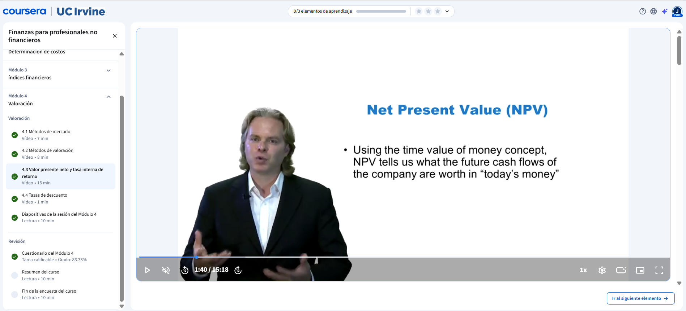
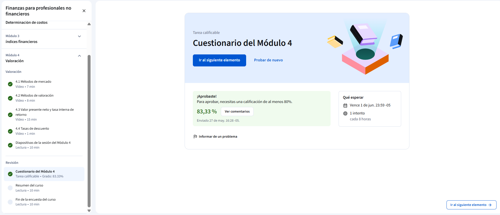

Lleva las finanzas hasta su punto culminante: aprende a determinar cuánto vale realmente una empresa, un proyecto o una inversión.
Se introduce la valoración partiendo de una idea clave: las cosas valen lo que alguien está dispuesto a pagar por ellas. El primer método es la capitalización bursátil, que multiplica el precio actual de cada acción por el número total de acciones emitidas. Es rápido y sencillo, pero tiene limitaciones importantes ya que el mercado puede estar influenciado por la especulación y el comportamiento de masas, lo que puede llevar a sobrevalorar o infravalorar una empresa respecto a su valor real.

Se presenta el método de múltiplos como herramienta intermedia entre la simplicidad del valor de mercado y la profundidad del flujo de efectivo descontado. Consiste en seleccionar empresas comparables del mismo sector, calcular sus múltiplos de ventas, EBITDA y beneficios, promediarlos y aplicarlos a la empresa que se quiere valorar. El resultado es un intervalo de valor que permite tomar decisiones más informadas tanto al comprar como al vender un negocio.

Se explica el método más completo de valoración: el flujo de efectivo descontado, basado en el principio de que el dinero hoy vale más que el dinero en el futuro. Los flujos de efectivo proyectados se descuentan usando el WACC para obtener el Valor Actual Neto (VAN). Un VAN positivo indica que la inversión genera valor; uno negativo indica que lo destruye. Con los mismos datos se calcula la Tasa Interna de Retorno (TIR): si supera la tasa de descuento, la inversión es rentable.
Se explica el WACC como la tasa que refleja el costo real del dinero para una empresa, combinando el costo de la deuda y el costo del capital según su proporción en la estructura financiera. Dado que la deuda siempre es más barata que el capital, mantener un buen equilibrio entre ambas es fundamental. Esta lógica también aplica para inversiones personales, donde la tasa de descuento representa el rendimiento mínimo esperado y la monetización del riesgo asumido.
